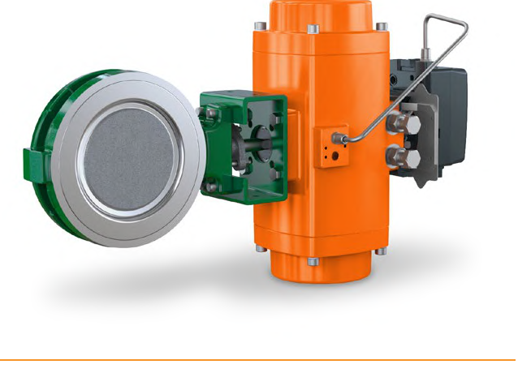

Rack-and-Pinion Actuators

- Compact and economical for rotary valves, but backlash in the gear mesh confines them to on/off duty rather than precision continuous throttling — a fundamentally different suitability than the spring-diaphragm and piston designs just covered.
After Control Valve Handbook, 6th ed., Fig. 3.50 — used directly. Component Index: cvh-cmp-rack-and-pinion-actuator.